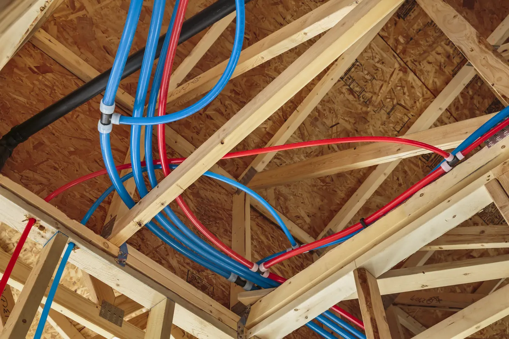

PEX (cross-linked polyethylene) piping has become a popular choice for residential plumbing over the past few decades, known for its flexibility, affordability, and resistance to corrosion. But not all PEX pipes are created equal. Some earlier generations of PEX, including certain Nibco PEX products and similar early formulations from other manufacturers, have been linked to issues that can cause homeowners serious headaches down the line.

If your home was built or repiped in the early 2000s to mid‑2010s, understanding these potential problems — and how Angle Stop Plumbing can help — is essential for protecting your plumbing system, your home, and your peace of mind.
🚨 What Makes Some Early PEX Pipe Problematic
While the concept of PEX piping is sound, certain early versions experienced flaws in material quality and manufacturing consistency. Here are some of the most common issues tied to early‑generation or Nibco PEX piping:
1. Premature Degradation
Some PEX formulations were prone to oxidative degradation. When exposed to high chlorine levels in municipal water or elevated temperatures over time, the pipe’s inner layer could weaken, crack, and eventually leak.
2. Fitting Failures and Cracking
In specific systems, the fittings — particularly those using brass — were found to be susceptible to dezincification, a process that causes the brass to corrode and form blockages or leaks. Combined with weakened PEX connections, this led to unexpected system failures.
3. Water Discoloration and Odor
Some homeowners with early PEX piping noticed chemical odors or water discoloration, especially when the pipes were first installed or exposed to heat. Although not always harmful, it indicated that certain plasticizers or polymers were breaking down faster than expected.
4. Class‑Action Lawsuits and Recalls
Multiple manufacturers — including Nibco — have faced lawsuits and claims regarding defective PEX pipes, fittings, and systems that prematurely failed, leading to property damage and significant repair costs.
🔍 How to Tell If You Have Early PEX in Your Home
If your house was built between 1995 and 2015, there’s a chance you have one of these early PEX systems. You can check your plumbing by:
- Locating an exposed section of pipe (under sinks, near the water heater, or in a basement).
- Reading the printed markings — look for brand names like Nibco, Zurn, Uponor/Wirsbo, or others.
- Checking for color‑fading, brittleness, or leaks around fittings.
If you’re unsure, Angle Stop Plumbing can perform a professional inspection. Our team can identify your pipe type, assess its current condition, and recommend the best course of action.
🧰 How Angle Stop Plumbing Can Help
At Angle Stop Plumbing, our licensed technicians specialize in evaluating and replacing aging or defective PEX systems. We treat every home with care, offering honest advice, precise diagnostics, and high‑quality materials for lasting results.
Here’s how we can restore your peace of mind:
✅ Comprehensive Pipe Inspection
We thoroughly assess your plumbing system — identifying early warning signs of failure before leaks or damage occur.
✅ Professional Re‑Piping Options
If your system shows signs of deterioration, we offer modern, durable replacements using the latest PEX materials or copper piping options for ultimate reliability.
✅ Transparent Recommendations
We’ll explain your options clearly — so you can make an informed decision that fits your home and budget.
✅ Preventive Maintenance & Warranty Protection
Regular inspections and maintenance help prevent costly breakdowns, ensuring your new plumbing system stands the test of time.
💧 Protecting Your Home for the Long Run
The good news is, with the right materials and expert installation, PEX remains one of the most dependable plumbing solutions available today. The key is choosing the right type of PEX and ensuring it’s installed and maintained by professionals who understand the details.
That’s where Angle Stop Plumbing comes in — delivering trusted expertise, superior materials, and true peace of mind for homeowners who value safety, reliability, and long‑term comfort.
🏡 Ready to Inspect or Upgrade Your Plumbing?
Don’t wait for an unexpected leak or costly water damage. Let Angle Stop Plumbing evaluate your home’s PEX system and provide solutions you can trust.
👉 Call us today to schedule your plumbing inspection or repipe consultation — and enjoy the confidence that comes from having a safe, secure plumbing system once again.